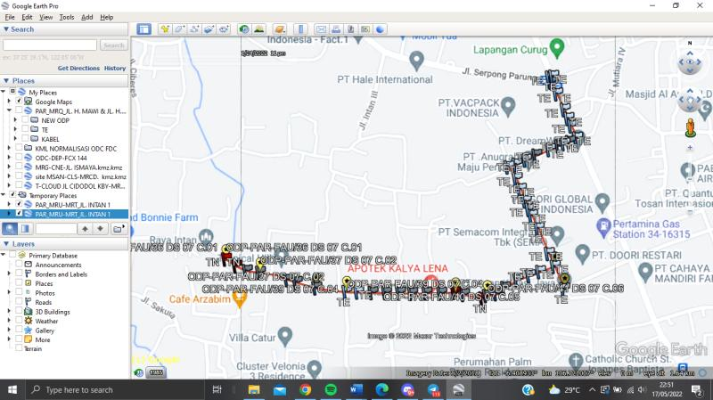
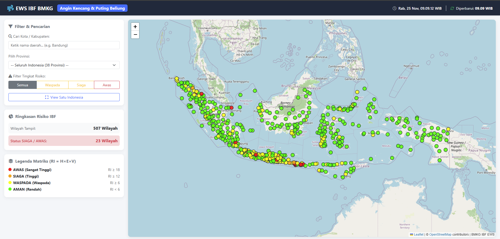
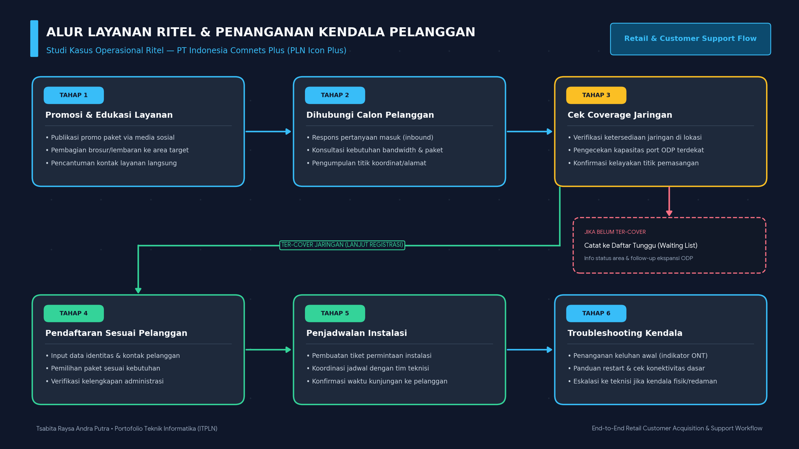
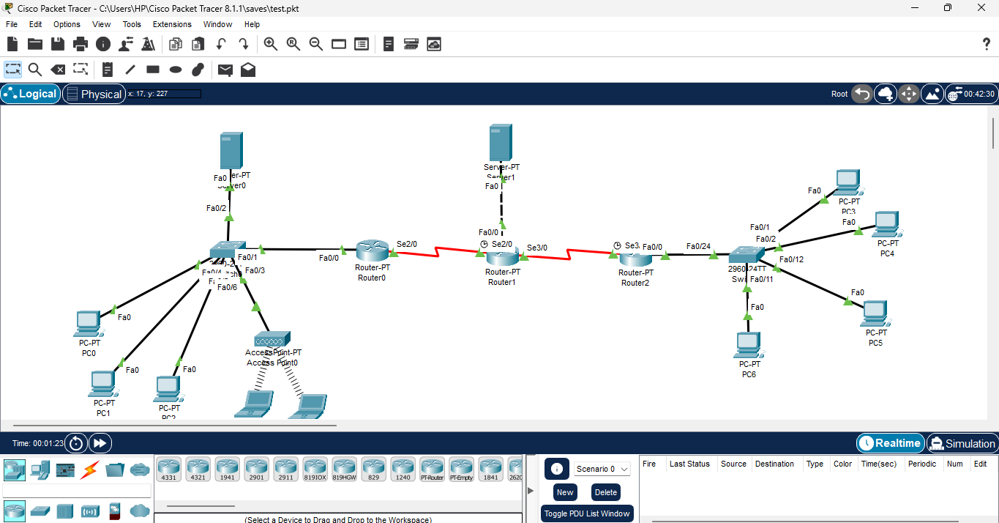

Mahasiswa S1 Teknik Informatika Institut Teknologi PLN yang memiliki minat dan pengalaman di bidang teknologi informasi, khususnya jaringan komputer, pengolahan data, dan machine learning. Memiliki pengalaman praktik dalam instalasi dan troubleshooting jaringan, serta pengolahan dataset meteorologi menggunakan Python, Pandas, dan NumPy untuk mendukung kegiatan analisis dan pemodelan data. Aktif dalam organisasi kemahasiswaan dan memiliki pengalaman kepemimpinan sebagai Ketua Himpunan Mahasiswa Teknik Informatika, dengan kemampuan koordinasi tim, komunikasi, pemecahan masalah, serta manajemen kegiatan. Adaptif, teliti, dan memiliki semangat untuk terus mengembangkan kemampuan teknis maupun profesional.
Instalasi, konfigurasi perangkat jaringan, simulasi topologi, dan pemeliharaan fisik maupun logis.
Pengolahan dataset meteorologi, pemodelan dampak cuaca, dan dukungan visualisasi spasial.
Koordinasi lintas tim teknis maupun non-teknis, manajemen acara, dan komunikasi pelanggan.




Mengolah dataset meteorologi menggunakan Python, Pandas, dan NumPy untuk prakiraan cuaca, berkontribusi dalam proyek identifikasi dampak cuaca metode IBF, serta mendukung rencana visualisasi melalui platform WebGIS.
Membantu administrasi pendaftaran pelanggan baru, menangani keluhan pelanggan dengan troubleshooting ringan, serta berkoordinasi dengan tim teknisi untuk penjadwalan instalasi.
Memimpin dan mengoordinasikan seluruh kegiatan himpunan, menyusun serta mengawasi program kerja, menjadi penghubung mahasiswa-pengurus-fakultas, serta mengembangkan SDM dan kerja sama internal maupun eksternal.
Melakukan pengecekan redaman fiber optik pada ODP dan ODC, menggambar skema lapangan peletakan kabel jaringan dan ODP, serta membantu instalasi dan pemeliharaan jaringan.